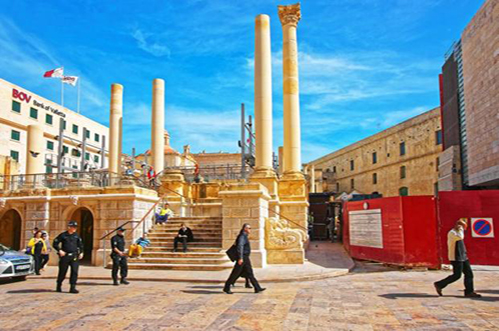

Notícias Nacionais de Malta
terça-feira, 16 de maio de 2017, 20 : 31
Telhado retratil está sendo estudado para a Pjazza Teatru Rjal
Governo quer construir uma sala de concertos nacional
Uma comissão parlamentar italiana disse hoje que Malta e a Tunísia devem se esforçar mais para ajudar a Itália a lidar com o enorme número de imigrantes que estão usando a Líbia como um trampolim em busca de uma vida melhor na Europa.
O governo estuda a possibilidade de instalar um telhado retrátil sobre o Pjazza Teatru Rjal da Renzo Piano.
O ministro da Cultura, Owen Bonnici, disse que os estudos a serem realizados respeitarão a estética do local, enquanto analisam maneiras de aumentar o potencial da região.
O teatro ao ar livre de Valletta, no local da antiga ópera, é amado e detestado em igual medida - com a beleza do local sendo pressionada por limitações meteorológicas e problemas de som.
"Vamos consultar a todos", disse o Dr. Bonnici a uma conferência de imprensa do Partido Trabalhista antes da eleição de 3 de junho.
O primeiro-ministro Joseph Muscat disse que este local em Valletta é subutilizado, com os moradores até mesmo preparando uma ação coletiva que poderia resultar no encerramento das atividades do teatro.
"Minha informação é que o telhado não foi construído porque o governo anterior não tinha fundos para isso, estamos analisando nossas reservas e vamos ver se é culturalmente e ambientalmente possível."
O Dr. Bonnici disse que um novo governo trabalhista estudaria a possibilidade de construir uma sala de concertos nacional que acolheria a orquestra nacional, ŻfinMalta, bem como outras entidades nacionais.
Todos os anos, segundo ele, uma localidade seria escolhida como a capital cultural do ano para incentivar a cultura, acrescentando que um novo sistema de ventilação estava sendo instalado no Teatro Manoel.
Embora o investimento do governo em cultura tenha dobrado, ele disse que o governo tinha investido 85 milhões de euros para restaurar 80 regiões históricas durante esta legislatura.
O PL também propõe estender a taxa de imposto preferencial de 7,5 por cento sobre o rendimento, que foi criada há dois anos para os esportistas e para aqueles que ganham a vida através das artes. Artistas também terão a possibilidade de calcular uma média de seus rendimentos durante três anos para o pagamento de impostos, com o intuito de suavizar os altos e baixos na renda de muitos trabalhadores do setor.